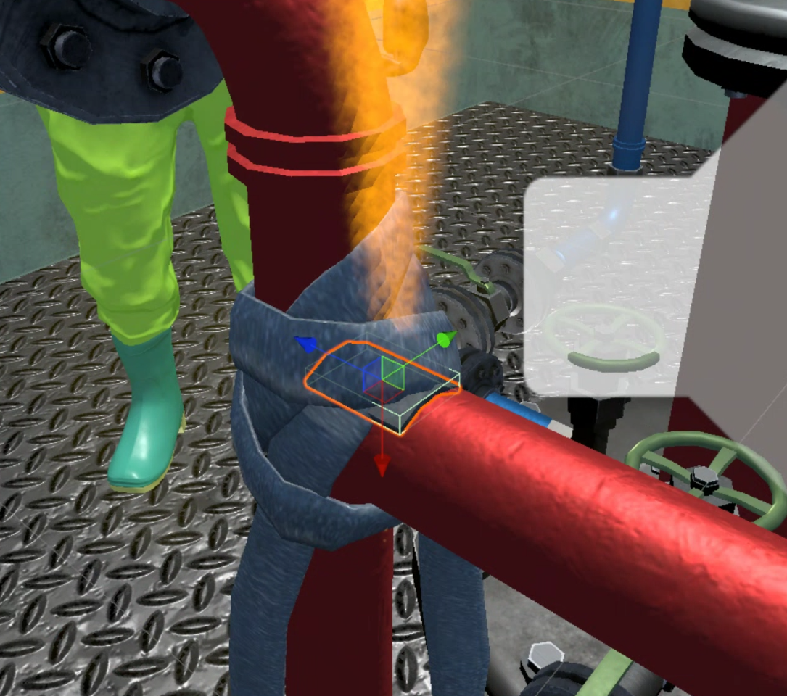

팝업, 구간별 안내, 결과 UI, 확인 버튼과 단계 Chain 흐름 반영
2025.05 - 2025.06 / Unity VR
소방 훈련 VR 콘텐츠 기능 개선
화학 공장 소방 훈련 VR 콘텐츠의 UI, 효과, 시나리오 진행 로직을 단기간 지원한 프로젝트. 기존 담당자가 만든 프로젝트 구조를 파악하고 요구된 개선 항목을 반영
역할 기능 개선 지원
엔진 Unity · C#
인원 개발자 1명


누출 지점 Decal, 상호작용 가능 타겟 하이라이트 머티리얼 추가
미션별 수행 점수 표시, 진행 로직 오류 수정, 리소스 교체
핵심 작업
UI 개선
팝업 타입 UI, 구간별 안내 UI, 결과 UI를 개선하고 확인 버튼과 단계별 Chain 기능을 추가
훈련 피드백
누출 지점 표시 Decal과 상호작용 위치 안내를 추가해 VR 사용자가 다음 행동 지점을 파악하기 쉽게 구성
하이라이트
상호작용 가능 타겟을 구분하는 하이라이트 머티리얼 기능 추가
로직 수정
미션 진행 로직 버그를 수정하고, 미션별 수행 점수와 결과 표시 흐름을 정리